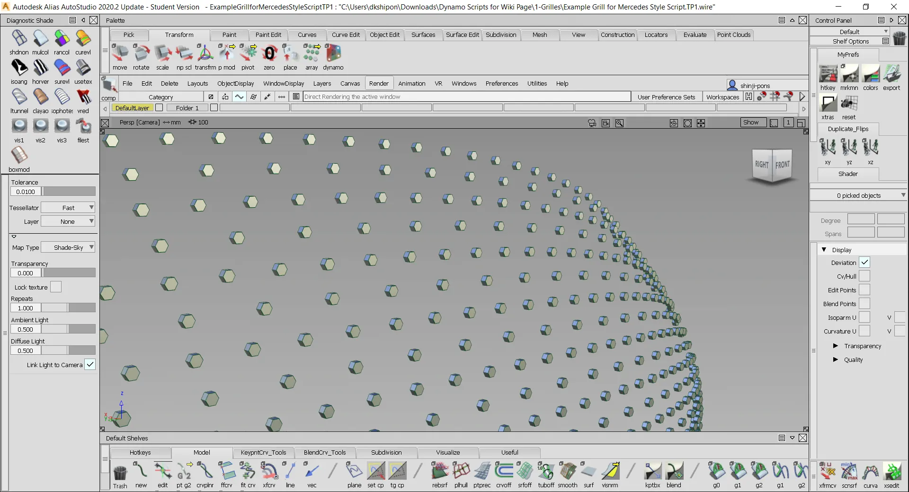
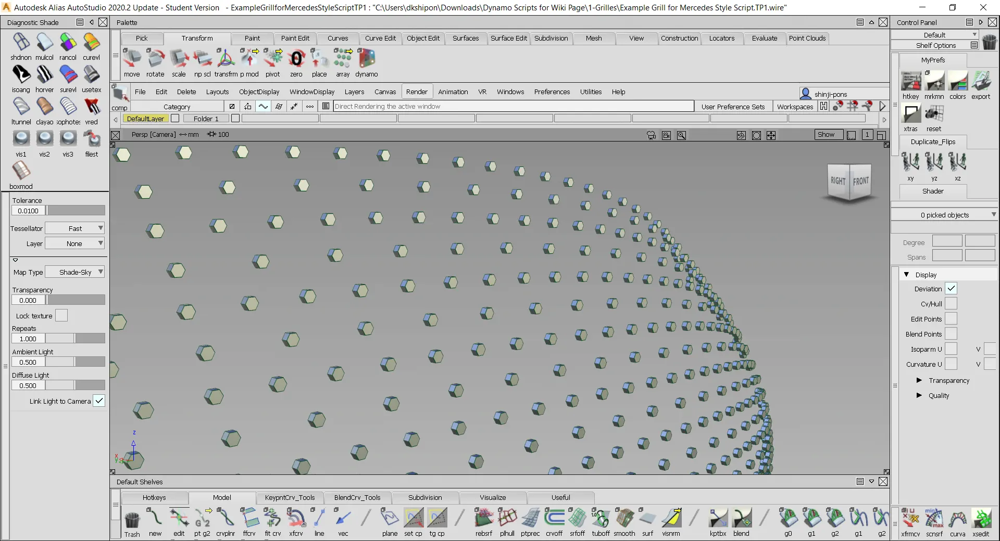
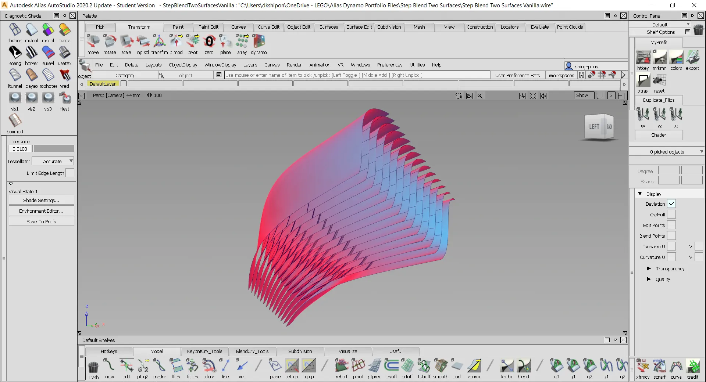
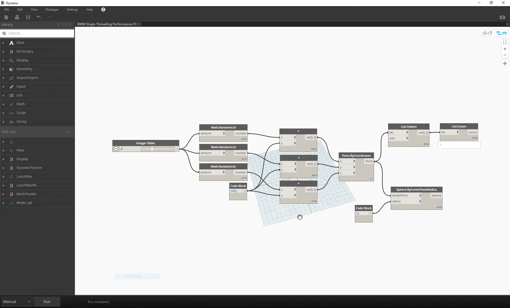
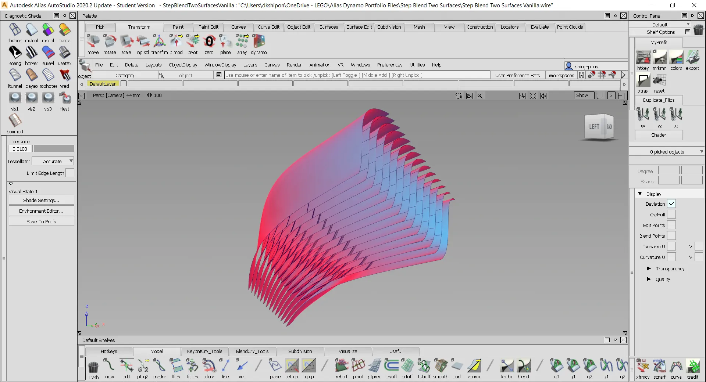
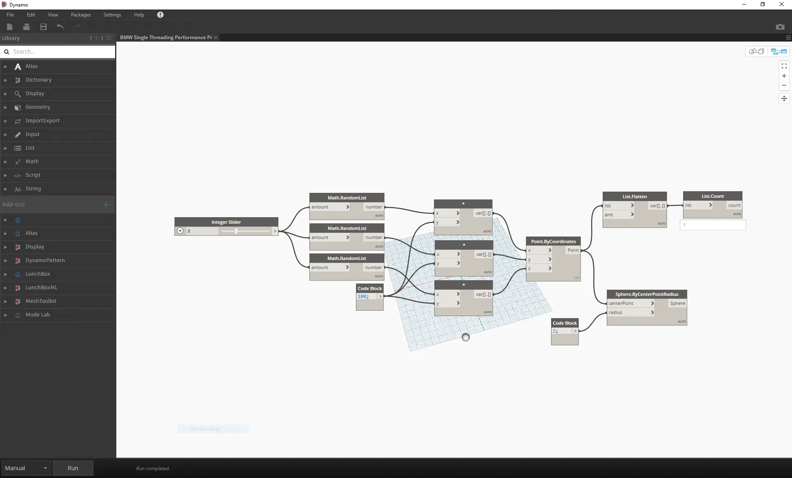

I worked on the tools and workflows integration of computational design tool Dynamo into Autodesk Alias.
Dynamo allows for the creation and reuse of templates across teams, capturing and reusing surfacing language.
With Dynamo, you can create custom algorithms that process data, user input and generates geometry, and drive design changes using parametric constraints.
While at Autodesk, I made a few tutorial videos on how to use Dynamo for Alias. You can watch them here.

 

 


